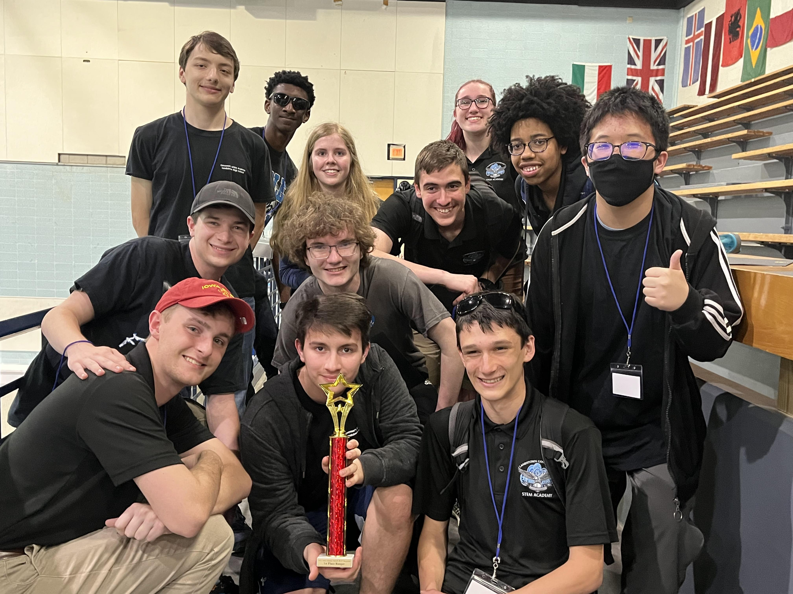
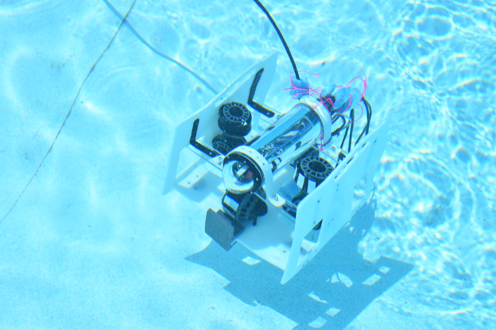

The robot for the 2023 season, TADD III
The world of underwater robotics is an ever-evolving domain where innovation and determination collide. In 2023, the Mid-Atlantic Regional and the 21st World Championship of the MATE ROV Competition provided an exhilarating platform for teams to showcase their ingenuity and problem-solving abilities. Among these remarkable teams was "Deep Sea Tactics," a team I had the privilege of being a part of. While our journey in 2023 had its unique challenges, it was a year of growth, learning, and the forging of unforgettable memories.
The Mid-Atlantic Regional
Deep Sea Tactics, a team comprised of enthusiastic high school engineers and scientists, embarked on our 2023 journey with a clear goal: to design a remotely operated vehicle (ROV) that could excel in the intricate underwater world. The Mid-Atlantic Regional competition, held in May 2023, was our first step. As a team, we entered the competition arena brimming with determination, each member contributing their unique skills and unwavering passion.
The Mid-Atlantic Regional competition presented us with a series of real-world challenges, demanding precision, efficiency, and adaptability from our ROV. From inspecting underwater infrastructure to collecting water samples and manipulating objects, each challenge tested our skills. We tackled these obstacles together, strengthening our camaraderie with each success. Our triumphant first-place finish in the regional competition was a testament to our dedication, relentless hard work, and innovative thinking.
The team at the Mid-Atlantic Regional hold the first place trophy
Preparing for the World Championship
Following our Mid-Atlantic Regional victory, we knew the road ahead would be arduous, leading to the 21st World Championship in June 2023. With the eyes of the world upon us, we faced the daunting task of refining our ROV and honing our skills.
In the months that followed, we embarked on a journey of innovation, teamwork, and countless brainstorming sessions. Every team member played a pivotal role, and my contributions felt like essential puzzle pieces. Seeking guidance from mentors and experts in the field, we gained valuable insights and deepened our appreciation for the global community that supports underwater robotics.
TADD III in the water
The 21st World Championship
The 21st World Championship of the MATE ROV Competition assembled teams from across the globe, all competing for the coveted title of world champion. The competition featured an array of challenges, demanding not only technical prowess but also teamwork, creative problem-solving, and adaptability.
Deep Sea Tactics faced formidable competition, with teams presenting impressive ROVs and innovative solutions to the underwater challenges. The World Championship pushed the boundaries of what our ROV could accomplish, testing our abilities to the fullest. Although our placement was 28th in the world, the experience was priceless. It taught us about the importance of resilience, sportsmanship, and the perpetual need for improvement.
Conclusion
Being a part of Deep Sea Tactics in the 2023 MATE ROV Competition was a transformative experience, marked by challenges, growth, and enduring camaraderie. Our journey, from clinching first place in the regional competition to finishing 28th in the World Championship, was a testament to our dedication, resilience, and unwavering spirit.
As we look ahead to the future of underwater exploration and technology, Deep Sea Tactics continues to be inspired by the vast potential of young engineers and scientists in the field of underwater robotics. The 2023 MATE ROV Competition will be remembered not only for its challenges but also for the enduring spirit of determination and the valuable lessons learned along the way. Our journey in 2023, with its ups and downs, reaffirms that the true prize lies in the experience itself and the opportunities it brings for personal and collective growth.